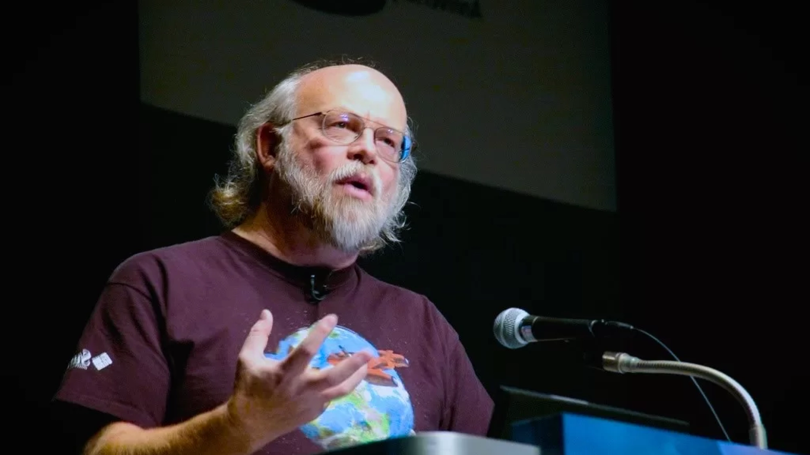

Java is one of the most widely used programming languages in the world. It was first released in 1995 by

James Gosling.
1. James Gosling is the creator of Java.
2. Born in 1955 in Calgary, Canada.
3. Created Java at Sun Microsystems in early 1990s.
4. Originally called Oak.
5. Officially released in 1995.
6. Designed to be platform-independent.
7. Famous slogan: “Write Once, Run Anywhere”.
8. Used in web, mobile, and enterprise systems.
9. Became backbone of Android development.
10. Still one of the most popular languages.
Patrick Naughton – The Co-Creator Who Helped Shape Java
1. Key member of the original Java team.
2. Worked at Sun Microsystems.
3. Helped design Java’s early architecture.
4. Focused on making it easy to use.
5. Contributed to GUI and networking APIs.
6. Visionary in cross-platform computing.
7. His contributions made Java developer-friendly.
8. Worked closely with James Gosling.
9. Pushed Java adoption in early days.
10. Remembered as a pioneer of modern programming.
Mike Sheridan – The Unsung Hero Behind Java’s Rise
1. Early contributor to Java project.
2. Worked with Gosling and Naughton.
3. Focused on business strategy.
4. Helped pitch Java to Sun Microsystems.
5. Promoted cross-platform power of Java.
6. Played key role in marketing Java globally.
7. Advocated for adoption in enterprises.
8. Supported open-source efforts.
9. Integral in Java’s early success.
10. Celebrated as a behind-the-scenes legend.

 Mike Sheridan
Mike Sheridan